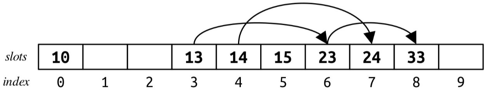
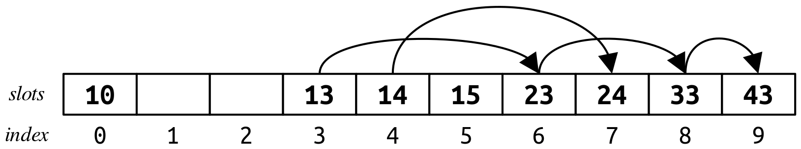
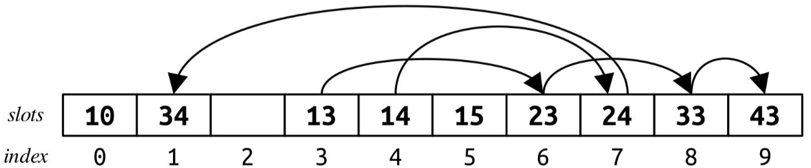
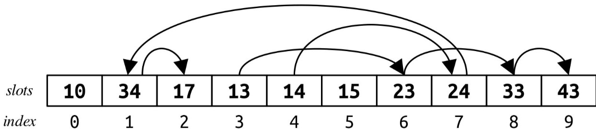

Starter Files
The starter files for this practice exam are available here:
Problem One: All Squared Away
Here’s a little number puzzle: can you arrange the numbers 1, 2, 3, …, and 15 in a sequence such that the sum of any two adjacent numbers is a perfect square? (A perfect square is a number that’s the square of an integer. So, for example, 16 = 42 is a perfect square, and 1 = 12 is a perfect square, but 19 isn’t a perfect square). There is indeed a way to do this, which is shown here:
8, 1, 15, 10, 6, 3, 13, 12, 4, 5, 11, 14, 2, 7, 9
However, you can’t do this with the numbers 1, 2, 3, …, 18, and you can’t do this with the numbers 1, 2, 3, …, 19, but you can do this with the numbers 1, 2, 3, …, 23.
Open the file AllSquaredAway.cpp and implement a function
bool hasSquareSequence(int n, Vector<int>& sequence);
that takes as input a number n, then determines whether there is some way to arrange the numbers 1, 2, 3, …, n such that each number appears exactly once and the sum of any two adjacent numbers is a perfect square. If so, the function should return true and update the outparameter sequence to contain one such way of arranging the numbers in this way. If not, the function should return false, and it can do whatever it likes to the sequence parameter.
For convenience, we have provided you with a function
bool isPerfectSquare(int value);
that takes as input an integer and returns whether that integer is a perfect square. (Please do not modify this function.)
You are encouraged to write your own STUDENT_TEST cases in AllSquaredAway.cpp, but you are not required to do so. Our provided tests are available in AllSquaredAwayTests.cpp.
Some notes on this problem:
-
You must implement this function recursively – that’s kinda what we’re testing here – but you are welcome to make the
hasSquareSequencefunction a wrapper. -
If the input value n is zero or negative, your function should call
error()to report an error. However, an input with n = 1 is permissible and should produce the sequence of just the number 1 on its own. -
There are no constraints on what the
sequenceparameter may hold when your function is first called. It could be empty, or it could contain a gigantic list of random numbers. -
Do not modify the signatures of
hasSquareSequenceorisPerfectSquare. Those functions must have the exact parameters and return values shown here. -
Your solution does not have to be as efficient as possible, but should be fast enough to pass all the stress tests in the appropriate amount of time (plus several stress tests we will use when grading). However, simply passing the provided stress tests does not guarantee that your code is sufficiently efficient.
The main observations we need to solve this problem are the following. First, since this problem talks about finding a way of rearranging things in a sequence, we're going to approach this as a permutations-type problem. At each point, we'll ask the question "which of the remaining numbers should come next?" Second, since we're asking the question "is it possible to do this?" (or, equivalently, "are there any ways to do this?"), we can frame this as a backtracking problem. We'll try out each option and, if any option works, immediately stop and report that we've found a solution.
Simply trying out all possible permutations won't be fast enough here. For example, with n = 35, there are 35! = 10,333,147,966,386,144,929,666,651,337,523,200,000,000 possible ways of ordering the numbers 1, 2, …, 35. However, most of those orderings are "silly." For example, no sequence starting with 1, 2 could possibly work, since 1 + 2 isn't a perfect square. Restricting ourselves by only appending numbers to the sequence that form a perfect square when added into the previous total dramatically cuts down the number of options that we need to try, and makes it surprisingly quick to find a solution for 1, 2, …, 35.
Here's one possible way to put this together:
bool isPerfectSquare(int value);
bool hasSequenceRec(const Set<int>& remaining, const Vector<int>& soFar, Vector<int>& result);
bool hasSquareSequence(int n, Vector<int>& result) {
/* Error-handling. */
if (n <= 0) error("Bad!");
/* Create a set of the numbers 1, 2, 3, ..., n. */
Set<int> values;
for (int i = 1; i <= n; i++) {
values += i;
}
/* See if we can order it. */
return hasSequenceRec(values, {}, result);
}
/* Given the set of remaining elements and the vector we've assembled so far, can we arrange
* the remaining elements at the end of the sequence to form a square sequence?
*/
bool hasSequenceRec(const Set<int>& remaining, const Vector<int>& soFar, Vector<int>& result) {
/* Base case: No elements are left. We must have ordered everything. */
if (remaining.isEmpty()) {
result = soFar;
return true;
}
/* Recursive case: Some number comes next. It needs to either be the first in the sequence
* or add with the previous number to give a perfect square.
*/
for (int elem: remaining) {
if ((soFar.isEmpty() || isPerfectSquare(soFar[soFar.size() - 1] + elem)) &&
hasSequenceRec(remaining - elem, soFar + elem, result)) {
return true;
}
}
return false;
}
Problem Two: Big-O Analysis Revisited
We’ve provided you a collection of five functions in BigOFunctions.cpp, along with the runtime plotter you had in Assignment 5. For each of those functions, determine its big-O time complexity, and briefly explain your reasoning (at most fifty words per answer). Place your answers in the file BigOAnswers.txt.
Some notes on this problem:
-
You do not need to – and in fact, should not – write any code here.
-
The advice from Assignment 5 about the runtime plotter is still applicable here – watch out for noise due to background processes running, understand that very small runtimes can be heavily influenced by noise, etc.
-
Feel free to consult the Stanford C++ Library Documentation for information about the big-O costs of different operations on different types.
void iterativePrinting(int n) {
for (int row = 0; row < n; row++) {
if (row % 1000 == 0) {
for (int col = 0; col < n; col++) {
cout << '*';
}
}
cout << endl;
}
}
This one runs in time O(n2). To see where this comes from, note that every thousandth iteration of the outer loop will have row % 1000 == 0, so every thousandth iteration of the outer loop does O(n) work. This means that we do O(n) work from the inner loop a total of O(n) times (specifically, it's roughly n / 1000 times) for a net total of O(n2) work.
void iterativePQ(int n) {
/* This priority queue type is backed by a binary heap, the same way the
* HeapPQueue from Assignment 6 was.
*/
PriorityQueue<int> pq;
for (int i = 0; i < n; i++) {
for (int j = 0; j < i; j++) {
pq.enqueue(i * n + j, i * n + j);
}
}
int total = 0;
while (!pq.isEmpty()) {
total += pq.dequeue();
}
cout << total << endl;
}
This one runs in time O(n2 log n). The answer of O(n2 log n2) is also correct. To see why, notice that by properties of logarithms, log n2 = 2 log n = O(log n). We didn't talk about that fact this quarter, so we accepted both answers. Going forward, though, you should avoid writing O(log n2) and instead write O(log n).
To see where this comes from, let's break the code down into two sections. The first loop nest runs for a total of O(n2) iterations; this pattern of "count from 0 to n, counting from 0 to i on each step" is the same pattern that we saw when working with selection sort and insertion sort. However, the fact that this loop nest runs O(n2) times doesn't mean that it does O(n2) work. Because each iteration enqueues an item into a priority queue, we have to factor in that cost as well. Generally speaking, adding to a priority queue with k items takes time O(log k). We're adding O(n2) items into the priority queue, so the cost of each insertion could be as high as O(log n2) = O(log n). That gives us a bound of O(n2 log n) work for this first loop.
(It turns out that, surprisingly, each enqueue here takes only time O(1). Why? Because the item that's being added in will have a higher weight than all others, so the bubble-up step will terminate immediately without swapping anything. That makes the cost of the top loop a smaller O(n2), but that doesn't turn out to matter.)
Next we go to the second loop. How long will it take to run? Well, there are O(n2) total items in the priority queue, and we're dequeuing each of them in turn. Each dequeue takes time O(log n2) = O(log n), so doing O(n2) of them will add up to O(n2 log n).
(And in this step, we do actually have to do the full logarithmic work each time, since swapping the heaviest element to the top and bubbling down will always cause the item to sink all the way down to the bottom.)
Overall, we do O(n2 log n) work in both loops, so the overall runtime is O(n2 log n).
void iterativeHashSet(int n) {
/* This type is backed by a chained hash table that rehashes whenever the
* load factor exceeds a small constant.
*/
HashSet<int> mySet;
for (int i = 0; i < n; i++) {
mySet.add(i);
}
int total = 0;
for (int i = 0; i < n; i++) {
if (mySet.contains(i)) {
mySet.remove(i);
total += i;
}
}
cout << total << endl;
}
This one runs in (expected) time O(n). Adding n elements to a hash table takes time O(n) since each insertion takes (expected, amortized) O(1) time and we do n of them. The second loop does n lookups and n removes, each of which takes (expected) time O(1) for a net total of (expected) O(n) time. All these operations are (expected) O(1) because the hash table does appropriate rehashing to keep the load factor low.
You may have noticed that we're saying all these operations are expected O(1) rather than worst-case O(1), and that's because there's some randomness due to the choice of hash function. In practice, you can basically treat these operations as if they really were worst-case O(1) because the probability that the operations take longer is very, very low. But in the worst case, we could technically say that this code could take up to O(n2) time to run if everything lands in the same bucket, but the odds of that are vanishingly small.
void iterativeLooping(int n) {
int i = n;
int total = 0;
while (i >= 1) {
total += i;
i = i / 2;
}
cout << total << endl;
}
This one runs in time O(log n). The inner loop works by shrinking i by a factor of two on each iteration, so the number of iterations is O(log n). Since each loop iteration does O(1) work, the total work done is O(log n).
This function produces some pretty spectacular runtime plots. On Windows systems, the timing code registers 0ms for each call. On macOS and Linux, the timing numbers are basically a bunch of small random numbers. And the reason for this is that this code is really, really fast. Figure that if n = 1,000,000,000 that this loop will run 32 times, and since the work done is so small the timing system has a heck of a time trying to measure how fast this is.
void iterativeVector(int n) {
Vector<int> values;
for (int i = 0; i < n; i++) {
values += randomInteger(0, n); // randomInteger runs in time O(1).
}
int total = 0;
while (values.size() > 1) {
/* Uses an algorithm with the same runtime complexity as mergesort. */
values.sort();
total += values[0];
values.remove(0);
values[0] = randomInteger(0, n);
}
cout << total << endl;
}
This one also runs in time O(n2 log n). To see why, let's break down the code into smaller pieces. The top loop appends n items to a vector, which takes time O(n).
To see how long the next loop takes, let's look at a single iteration. Each iteration does O(n log n) work to sort the vector, then O(1) work to add to total and replace values[0], and finally O(n) work to do values.remove(0). Adding this up means that we do O(n log n) work, since big-O notation ignores the lower-order terms (both O(1) and O(n) are dominated by O(n log n)). So each loop iteration does O(n log n) work and there are n iterations, for a net total of O(n2 log n).
Problem Three: Leapfrog Hashing
In this problem, you'll implement a type of hash table called a leapfrog hash table that's a hybrid between a chained hash table and a linear probing hash table.
Leapfrog hashing, like linear probing and Robin Hood hashing, is an open-addressing table, which means the hash table is made of a collection of individual slots, each of which can either be empty or hold an item. The slot type for leapfrog hashing is as follows:
struct Slot {
std::string value;
SlotType type; // SlotType::EMPTY or SlotType::FILLED
int link;
};
This slot type is the same as what you'd find in standard linear probing with one major change: the link field. This field can hold one of two values: either the constant NOT_LINKED, indicating that the slot is not linked to another slot, or the index of another slot in the table.
We can visualize a leapfrog hash table by drawing it out like a regular linear probing table, with the addition of links between slots. For example, here's a sample leapfrog hash table. Here, we're using a (bad, just for expository purposes) hash function that hashes each number to its last digit:

In this picture, if there's a link from one slot to another, we've drawn an arrow from the first slot to the slot it links to. Empty slots, and slots whose link is NOT_LINKED, are drawn with no outgoing arrows.
Lookups in Leapfrog Hashing
Lookups in a leapfrog hash table work as follows. As in linear probing or Robin Hood hashing, we begin by hashing the item in question to find its home slot. If that slot is empty, then the element is definitely not in the table and we can stop looking. If that slot is full and contains the item we're looking up, great! We've found it. Otherwise, the element might still be in the table, but just not in the position it wants to be in, so we will need to search for it.
This is where the link field comes into play. Rather than using the linear probing technique, we'll instead move from this slot to the slot given by the link field, seeing if the element is there. We'll keep following the links from one slot to the next until either (1) we find the element or (2) we need to follow a link pointer from a slot whose link field is the constant NOT_LINKED, indicating that the slot has no outgoing link. (This behavior of jumping around the table is where the name "leapfrog hashing” comes from.) The sequence of slots we visit this way is called a chain.
For example, suppose we want to look up 33 in the above table. We begin by hashing 33 to get slot 3, which is our starting slot. That slot is full, but contains a value other than 33 (specifically, 13). We therefore follow its link to slot 6. Slot 6 has 23 in it, which isn't what we're looking for, so we follow its link to slot 8. Slot 8 contains 33, so we've found the item we're looking for.
As another example, suppose we're looking for 17, which is not in the table. We begin by hashing 17 to get slot 7, which currently holds 24. That's not what we're looking for. Since slot 7 has no outgoing link, we stop searching and report that 17 is not in the table.
To look up 10, we hash to slot 0, find that 10 is present, and therefore signal that 10 is in the table.
Next, suppose we want to look up 16. We begin by jumping to slot 6, which holds 23 (not what we’re looking for), so we follow the link to slot 8. Slot 8 contains 33, which isn’t what we’re looking for, and since it has no outgoing link we stop searching and report that the table doesn't contain 16.
Finally, suppose we want to look up 11. We jump to slot 1, find that it's empty, and therefore immediately know that 11 isn't in the table.
Insertions in Leapfrog Hashing
Insertions in leapfrog hashing working as follows. We begin by first checking that the item we want to insert isn't in the table; if it is, then we don't need to do anything. Otherwise, the item isn't present, and we need to add it. We jump to the slot given by the item's hash code, then follow the links until we come to the last slot in the chain.
For example, suppose we want to insert 43 into this table:
Item 43 has hash code 3, so we begin in slot 3. We follow links from slot 3 to slot 6, then from slot 6 to slot 8, stopping in slot 8 because there is no outgoing link.
At this point, we need to find another free spot in the table at which to insert 43. To do so, we use a regular linear probing search starting in the slot just after the one we ended in (wrapping around, of course) until we find a free slot. Our chain ended in slot 8, so we start a linear probing search from slot 9. That slot is empty, so we place 43 there, linking slot 8 to slot 9. Since 43 is now at the end of its chain, we set its link to NOT_LINKED, since nothing comes after it. This is shown here:

Now, suppose we insert 34. We jump to slot 4 to start, then follow links until we reach the end of the chain. That takes us to slot 7. From here, we do linear probing, starting in slot 8, to find a free slot. That wraps us around the table to slot 1. We put 34 there, adding a link from slot 7 to slot 1, as shown here:

You might have noticed that, at least in this table, all items in a chain have the same hash code (13, 23, 33, and 43; 14, 24, and 34). But that's just a coincidence and isn't guaranteed to be true. For example, suppose we insert 17. We jump to slot 7, then follow the link to slot 1, then use linear probing to place 17 into slot 2. That's shown here:

To recap, here's how the lookup and insertion procedures work:
-
Lookup: Jump to the slot given by the item's hash code, and stop if the slot is empty. Otherwise, follow links forward until you either find the item or run out of links to follow.
-
Insert: Proceed as with a lookup. If you don't find the item, use linear probing starting from right after the last slot visited until an empty slot is found, placing the item there and updating links as appropriate.
There are some edge cases to watch out for when dealing with insertions. You have to make sure not to insert the same item twice, not to insert into a full table, and to handle the case where the initial slot is empty.
Your Task
Your task is to implement the LeapfrogHashTable class shown below. Since we only discussed lookups and insertions, you do not need to handle removal of elements.
class LeapfrogHashTable {
public:
LeapfrogHashTable(HashFunction<std::string> hashFn);
~LeapfrogHashTable();
int size() const;
bool isEmpty() const;
bool contains(const std::string& value) const;
bool insert(const std::string& value);
void printDebugInfo() const;
private:
enum class SlotType {
FILLED,
EMPTY
};
static const int NOT_LINKED = /* something that isn't a valid link index */;
struct Slot {
std::string value;
SlotType type;
int link;
};
Slot* elems;
};
You should not change or remove any of the code given here, but you are welcome to add to it.
All your code should go in the files LeapfrogHashTable.h and LeapfrogHashTable.cpp. You are encouraged to write your own STUDENT_TEST cases in LeapfrogHashTable.cpp, but you are not required to do so. Our provided tests are available in LeapfrogHashTableTests.cpp.
Some notes on this problem:
-
An excellent warmup before you start coding things up: look at the very first image of a leapfrog hash table from this section. In what order did we insert those items into the hash table? Is there exactly one way to do it, or are there many? You do not need to submit your answers to this question; it's just a warmup to help solidify your understanding of how leapfrog hashing works. However, we definitely recommend doing this before you write any code to make sure you're rock solid on how the procedures work!
-
As with Assignment 7, you must do all of your own memory management, and you must not use any of the standard container types (
Vector,Map,Stack, etc.) -
As with Assignment 7, your hash table should have a fixed size given by the number of slots specified by the hash function in the constructor. You should not rehash even if the table starts to get full. In particular, insertions should fail if the table is full.
-
As with Assignment 7, your implementations of
contains()andinsert()must not be recursive, since that might result in stack overflows on large inputs. -
The
size()andisEmpty()functions should run in time O(1). -
We have provided a set of tests for
LeapfrogHashTablethat are not as extensive as the ones from Assignment 7. You are encouraged to write your own tests, but you are not required to do so. -
You can do whatever you'd like with
printDebugInfo. We won't be calling this function when grading your submission. -
Do not change any of the signatures of the functions from
LeapfrogHashTable, edit theSlotTypeorSlottypes, or remove theSlot* elemsdata member. You may, however, add additional private data members or private member functions. -
Your code should be fast enough to pass all the provided stress tests (plus several we will use during grading). However, simply passing the provided stress tests does not guarantee that your code is sufficiently efficient.
Here's one way to do this. Our solution has two extra data members: a HashFunction<string> named hashFn, and an int named logicalSize.
/* Stash the hash function for later, and mark all slots empty. */
LeapfrogHashTable::LeapfrogHashTable(HashFunction<string> hashFn) {
this->hashFn = hashFn;
elems = new Slot[hashFn.numSlots()];
for (int i = 0; i < hashFn.numSlots(); i++) {
elems[i].type = SlotType::EMPTY;
/* No need to set the link field; we aren't going to be reading it
* from empty slots.
*/
}
}
/* Clean up our memory. */
LeapfrogHashTable::~LeapfrogHashTable() {
delete[] elems;
}
/* Jump to the initial slot and walk the chain to see if the element is there. */
bool LeapfrogHashTable::contains(const string& key) const {
int index = hashFn(key);
/* If the slot is empty, the item is definitely not here. */
if (elems[index].type == SlotType::EMPTY) return false;
/* Walk th chain. */
while (true) {
/* Found it? */
if (elems[index].type == SlotType::FILLED && elems[index].value == key) return true;
/* Move on, or give up. */
if (elems[index].link == NOT_LINKED) return false;
index = elems[index].link;
}
}
/* Walk to the end of the chain, and do linear probing from there. */
bool LeapfrogHashTable::insert(const string& key) {
/* Don't insert an item that's already here. */
if (contains(key)) return false;
/* Don't insert into a full table. */
if (size() == hashFn.numSlots()) return false;
/* Proceed as if looking something up. */
int index = hashFn(key);
/* If the slot is full, proceed to the end of the chain and use linear
* probing to find a free slot.
*/
if (elems[index].type == SlotType::FILLED) {
/* Walk to the end of the chain. */
while (elems[index].link != NOT_LINKED) {
index = elems[index].link;
}
/* Record this index; we'll need to link it to our new slot. */
int lastSpot = index;
/* Do standard linear probing from here. */
index = (index + 1) % hashFn.numSlots();
while (elems[index].type == SlotType::FILLED) {
index = (index + 1) % hashFn.numSlots();
}
/* Link the last spot here. */
elems[lastSpot].link = index;
}
/* The final home of this item has no outgoing link. */
elems[index].link = NOT_LINKED;
/* Place the item here. */
elems[index].type = SlotType::FILLED;
elems[index].value = key;
logicalSize++;
return true;
}
/* Return the cached size. */
int LeapfrogHashTable::size() const {
return logicalSize;
}
/* We're empty if our size is zero. */
bool LeapfrogHashTable::isEmpty() const {
return size() == 0;
}
void LeapfrogHashTable::printDebugInfo() const {
/* They said I could do anything, so I did nothing! */
}
We saw a bunch of variability in the answers submitted. Some of you set all slots' link field to NOT_LINKED once in the constructor. Some of you split the linear probing step into two separate searches, one from the home slot to the end of the table and one from the beginning of the table to home slot. Some of you combined the loops for linear probing and chain walking into a single loop, having a flag indicating which mode to use.
The most common mistakes we saw were off-by-one errors when traversing the chains (often skipping the very first or very last item in the chain), forgetting to check whether items were present during an insertion, and forgetting to check whether a slot was filled before reading its value. (That last one often manifested as errors where the empty string would appear in the table even if it had not been added; this happens because the strings in the slots all default to empty.)